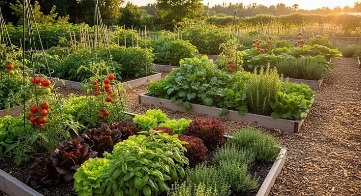

Vida comunitaria
Nuevo huerto comunitario invita a cultivar en conjunto
Publicado el

La jornada reúne a familias y organizaciones del barrio para preparar camas de cultivo, compostar restos orgánicos e intercambiar semillas entre quienes ya cultivan y quienes recién comienzan.
Más que una actividad de jardinería, el encuentro busca fortalecer los lazos entre vecinos y transmitir técnicas de cultivo sustentable de una generación a otra.
Información de la actividad
- Fecha: sábado 29 de agosto.
- Duración: 3 horas.
- Requisito: ropa cómoda y ganas de trabajar la tierra.